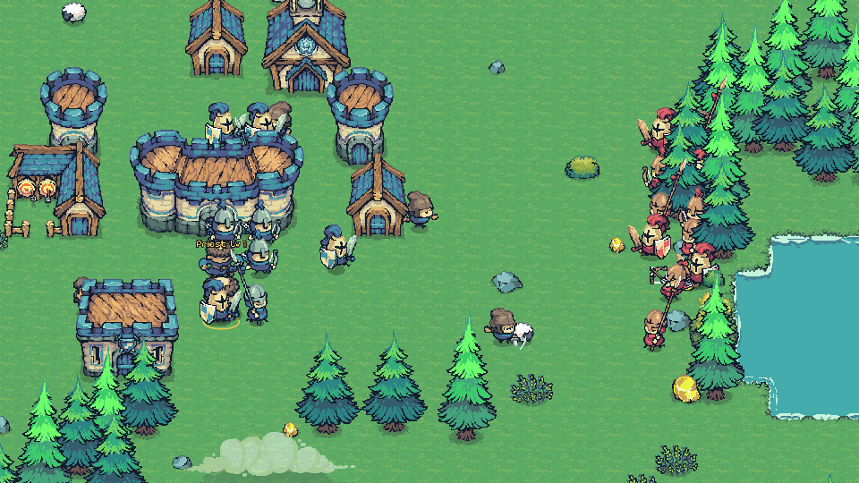
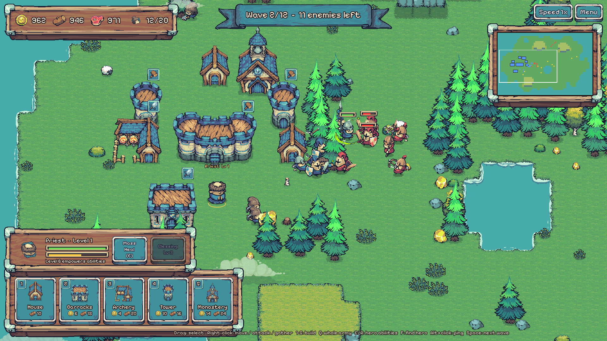
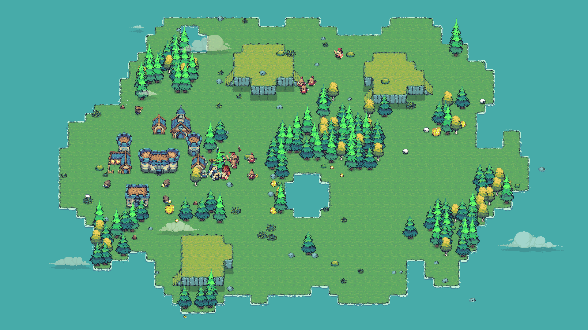

Tiny Kingdom Defense
Gather - Build - Defend, alone or with friends
Get it on itch.io
Free for Windows. Online play needs an internet connection.
Your tiny kingdom
Your castle stands on a floating island, and invaders are coming from the sea. Gather wood, gold and meat, raise houses and barracks, train an army and level up your hero. Then hold your castle against 12 waves of invaders landing on your shores.
- Build a kingdom. Pawns chop trees, mine gold and herd sheep on their own, then build your houses, barracks, archery ranges, monasteries and towers.
- Command an army of warriors, archers, lancers and monks.
- Pick a hero: Knight, Lancer, Ranger or Priest, each with two abilities.
- Five islands plus endless random ones, on Easy, Normal or Hard.
- Online Co-op and Versus for up to 4 players. Play as a guest or sign in with Epic.

